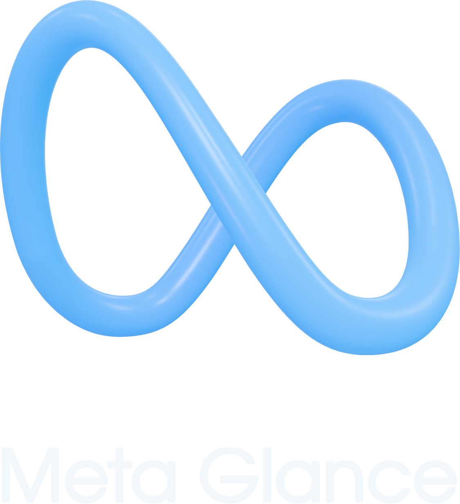

A protocol for AI glasses. Look at a code, hear what it is and what it costs, and nod to confirm.
Junction 2026 · Meta challenge: AI Glasses for Everyone, EverydayAn independent project. Not a product of Meta.
Problem
Checkouts, tickets, and gates ask for your hands and your eyes.
2.2 bn
people have a near or distance vision impairment. Small print and touchscreens shut many of them out.
Hands full
Bags, a child, a cane, a stroller. There is no free hand to hold a phone.
Eyes on a screen
A barcode to aim at, a total to read, a small button to find.
Phone in the pocket
Take it out, unlock it, open the app, scan, tap, put it away.
Solution
Meta Glance: look at a code, hear the offer, nod to confirm.
One loop for every place that can show a code. The glasses see, the voice tells, the head answers. The phone stays in the pocket.
You hear what a nod does before it can count.
A nod counts only while you look at the code.
Why now?
Meta asks for an everyday use of a first-person view.
“Build the best everyday use case using AI glasses from Meta, showing how a first-person field of view enables new or better interactions in everyday scenarios.”
“We are interested in focused everyday problems where wearables unlock hands-free, in-the-moment value beyond basic mirroring.”
The Meta challenge at Junction 2026: AI Glasses for Everyone, Everyday
The glasses sell
“AI glasses almost doubling in revenue in Q2.”
EssilorLuxottica, Q2 and H1 2026 results, 28 July 2026
The toolkit is open
Meta’s Wearables Device Access Toolkit gives a phone app the camera, the motion sensor, and the touchpad of the glasses.
Our protocol: a use case · 1 of 8
The Glance protocol links a person, a place, and a nod.
Our protocol: a use case · 2 of 8
Our use case: shop a store with your eyes, pay with a nod.
The phone stays locked in a pocket. The camera, the voice, and the nods run with the screen off.
Our protocol: a use case · 3 of 8
Hold a product up. Hear its name and its price.
Footage
First-person view through the glasses. A hand lifts the oat drink, and the voice says its name and price.
By sight
A model compares the frame with pictures of each item that the store sells.
By barcode
The phone reads the code, and the list of the store gives the name and the price.
Our protocol: a use case · 4 of 8
Nod to add. The nod counts while the voice still speaks.
Footage
The wearer nods. The cart on the phone updates.
300–430 ms
from the start of a nod to its report on the phone.
Measured with Ray-Ban Meta glasses on 14 November 2026: one wearer, three prompts. The voice line in the drawing is an example of 3 seconds.
Our protocol: a use case · 5 of 8
Look at the checkout code. Hear the total. Nod to pay.
“Checkout 3 at Demo Market. Two items, four euros forty-nine. Nod to pay.”
Our protocol: a use case · 6 of 8
Built for people with all abilities, not only for a demo.
Blind and low vision
Every name, price, and warning is spoken. There is no screen to read.
Hands full
Bags, a cane, a stroller. The head answers, the hands stay busy.
Cannot nod?
Double tap the glasses, or press a button on the phone. Swap nod and shake. Take 15 seconds, or all the time in view.
Allergies and budget
A warning before the nod: the 14 allergens of EU law, vegan and vegetarian, a spending limit.
App settings, in English and Italian.
Our protocol: a use case · 7 of 8
Nothing happens by accident, and nobody nearby is exposed.
Consent
A look alone changes nothing. The voice names the place and the amount first.
A nod pays only while the code is in view, and only after the line ends.
A shake cancels: “Checkout cancelled. Your cart is safe.” A shake after an add takes it back.
A nod is consent, not identity. A fingerprint above an amount is one server setting away.
Privacy
The phone pixelates each face before a frame leaves it. If detection fails, the frame is dropped.
The phone reads the code itself. The server gets text, not a picture of the place.
The server keeps a frame in memory for one call and writes none to disk.
A team photo, pixelated as the phone does it.
Our protocol: a use case · 8 of 8
It runs on stock Ray-Ban Meta glasses, through Meta’s own toolkit.
7 fps
camera stream, scanned on the phone for codes
The rate that the app asks of the glasses
30 Hz
head motion, read for a nod and a shake
Gyroscope and accelerometer of the glasses
1.2 s
median time of one call that names a product by sight
Measured on 14 November 2026: 146 frames, Gemini
Permissions. The glasses link through the Meta AI app. Setup asks for the camera and the notifications.
Connectivity. After a stall of the link, a late nod still counts, up to 21 seconds after its window.
Device state. Screen off and locked: a foreground service keeps the shop alive. Glasses gone: it waits 5 minutes.
Errors. “This checkout is busy.” “Payment failed. Nothing was charged.” The voice says what went wrong.
Business model: why this fits Meta
For Meta: a reason to wear the glasses every day.
Works today
Ray-Ban Meta and the Device Access Toolkit. A place adds no hardware beyond a screen or a printed code.
A platform, not an app
A place plugs in with a code and an event stream. The loop stays one.
A daily habit
Paying, boarding, opening a door: moments that come back every day.
Inclusive by design
Hands-free and eyes-free from the first step.
Our ask: we want to keep building Glance, full time, with Meta.
A working loop today, a path from one checkout to the glasses.
Competition and our edge
Others solve one part. Glance closes the loop.
Way to pay or act
Hands free
No screen to read
No new store hardware
Spoken offer, then a yes
Status
Meta Glance
Prototype, mock payment
Scan and go app, S Group
phone app
67 stores in Finland
Self-checkout kiosk
Common in stores
Amazon Just Walk Out
Left US Amazon Fresh, 2024
Phone tap or QR payment
a terminal
Everywhere
“Hey Meta, scan and pay”
not stated
Test in India, Oct 2025
Meta AI and Be My Eyes
Shipping, no payment
Our edge: the place states its offer in your ear, and a nod counts only while you look at it. A protocol for any place, not one store system.
Go-to-market strategy A plan, not agreed with any partner
Start at one checkout. Grow to every place that can show a code.
First wearers: the people who gain the most. Blind and low-vision shoppers, and anyone with full hands.
Future vision of the protocol Enabled by the protocol, not built
Any code in the world, answered with a nod.
On glasses with a display, the same prompt in the lens. A mockup on the Meta Ray-Ban Display toolkit, from a recording.
Team
Four builders who want to make this real.
Alessandro De Biasi
MSc AI and Cybersecurity, University of Udine and Klagenfurt (double degree)
Federico Bertossi
BSc Computer Science, University of Udine. Software Engineer
Marco Ceccon
Software Engineer
Michele Lizzit
MSc Cybersecurity, ETH Zurich. PhD candidate in Computer Science, University of Udine

Look. Nod. Done.
Let us build the loop into the glasses, together.
Meta Glance · Junction 2026An independent project, built with Ray-Ban Meta glasses and Meta’s Wearables Device Access Toolkit. Not a product of Meta.